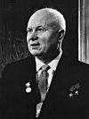

Saturn is the sixth planet from the Sun and the second-largest in the Solar System, after Jupiter. Named after the Roman god of agriculture, it is a gas giant with an average radius about nine times that of Earth. Although it has only one-eighth the average density of Earth, it is over 95 times more massive. A core, probably iron–nickel and rock, is surrounded by a deep layer of metallic hydrogen, an intermediate layer of liquid hydrogen and liquid helium, and a gaseous outer layer. Ammonia crystals give the upper atmosphere a pale yellow hue. Electrical current within the metallic hydrogen layer is thought to give rise to the planetary magnetic field. Wind speeds can reach 1,800 km/h (500 m/s), higher than on Jupiter, but not as high as on Neptune. A prominent ring system with nine continuous main rings and three smaller arcs is composed mostly of ice particles, with some rocky debris and dust. Saturn has hundreds of moonlets and at least 62 moons, including Titan, the second-largest moon in the Solar System and the only one with a substantial atmosphere. (Full article...)
Part of the Solar System series, one of Wikipedia's featured topics.
Recently featured: Fork-marked lemur Paul Kruger DNA nanotechnology
Archive By email More featured articles

Recent additions Start a new article Nominate an article
Other recent events
Recent deaths: Rafe Mair Y. A. Tittle
October 12: Shemini Atzeret (Judaism, 2017); Feast day of Our Lady of the Pillar in the Philippines and Spain; National Day in Spain (1492)
October 12: Shemini Atzeret (Judaism, 2017); Feast day of Our Lady of the Pillar in the Philippines and Spain; National Day in Spain (1492)
Demosthenes (d. 322 BC) · Ramsay MacDonald (b. 1866) · Ricky Wilson (d. 1985)
More anniversaries: October 11 October 12 October 13
Archive By email List of historical anniversaries
Saffron is a spice derived from the flower of Crocus sativus, commonly known as the "saffron crocus". The vivid crimson stigmas and styles, called threads, are collected and dried to be used mainly as a seasoning and colouring agent in food. Saffron, long among the world's most costly spices by weight, was probably first cultivated in or near Greece. Today Iran accounts for approximately 90% of global production.
Recently featured: Ceylon rupee Messier 106 Selimiye Barracks
Archive More featured pictures
Wikipedia is hosted by the Wikimedia Foundation, a non-profit organization that also hosts a range of other projects:
Commons
Free media repository
MediaWiki
Wiki software development
Meta-Wiki
Wikimedia project coordination
Wikibooks
Free textbooks and manuals
Wikidata
Free knowledge base
Wikinews
Free-content news
Wikiquote
Collection of quotations
Wikisource
Free-content library
Wikispecies
Directory of species
Wikiversity
Free learning and activities
Wikivoyage
Free travek guide
Wiktionary
Dictionary and Thesaurus
This Wikipedia is written in English. Started in 2001, it currently contains 5,491,708 articles. Many other Wikipedias are available; some of the largest are listed below.